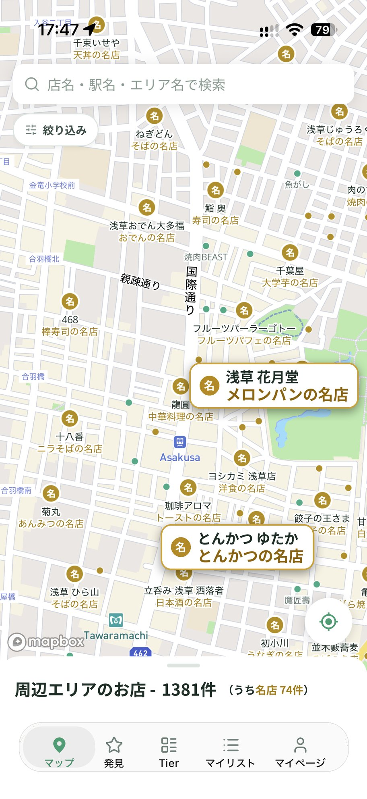
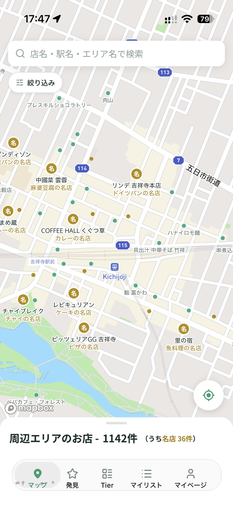
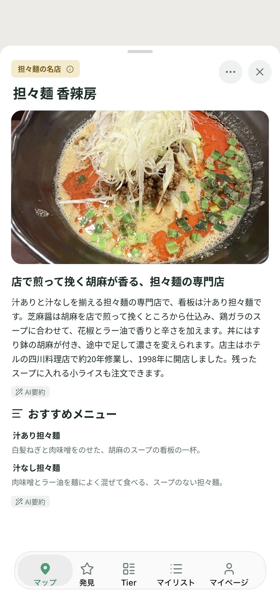
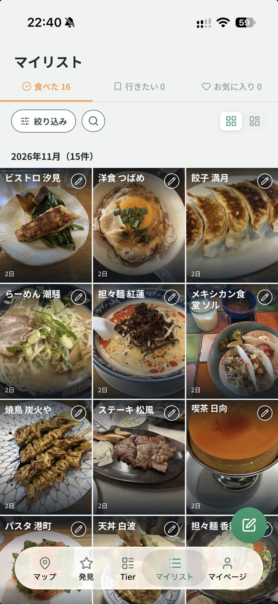

この街で行くべき
名店が、
地図でわかる。
「とんかつの名店」「メロンパンの名店」。
何を食べに行く店かまで、ひと目で。

無料でダウンロード
iPhone / Android ・ 関東の飲食店に対応
- お店が多すぎて、どこに行けばいいか分からない。
駅のまわりだけで1,000件以上。全部は見比べられない。
- 点数を見比べても、決めきれない。
星4前後が並んで、違いも、何を食べに行く店かも分からない。
- あとで「ここに行けばよかった」と気づく。
帰ってから、その街の名店を知る。
ガイドブックを読み込んでから出かけた日のように。
Dishcoverなら、地図を開くだけで
行くべき名店がわかる。
名店は、地図で金色のピンに。
何の名店かも、ひと目で。
名店は地図で金色のピンになり、一覧ではいちばん上に並びます。「ドイツパンの名店」「麻婆豆腐の名店」とバッジがつくので、何を目当てに行く店かもわかります。

どんな名店なのかも、
わかる。
看板の一品も、店のこだわりも。名店をタップすれば、写真と紹介文、おすすめメニューでわかります。

こんなときに
- 初めての街で
着いた駅で地図を開けば、その街で行っておくべき名店がわかる。
- 出かける前に
駅名で検索して、行き先の名店を先にチェック。気になったら「行きたい」に保存。
Dishcoverの「名店」とは
「〇〇を食べるならここ」と名前が挙がるお店です。
点数やランキングではなく、「何を食べに行く店か」まで含めて選んでいます。
グルメガイドや各種専門誌での掲載・評価、その街の名物・老舗としての評判などをもとに、総合的に判断して選んでいます。
今後は、実際に行った方の声でも見直していきます。
食べたお店は、
写真のコレクションに。
行ったお店を写真で記録すると、マイリストに並んでいきます。記録したお店から、自分だけのTier表もつくれます。

よくある質問
名店はどうやって選んでいますか？
グルメガイドや各種専門誌での掲載・評価、その街の名物・老舗としての評判などをもとに、総合的に判断して選んでいます。点数の順番ではありません。
近くに名店がない場合は？
名店は街ごとに数を決めて選んでいないため、名店が表示されない街もあります。駅名で検索すれば、出かける先の名店を先に見られます。
無料ですか？対応エリアは？
無料です。関東の1都6県の飲食店に対応しています。
最新アップデート
すべての更新を見るDishcover
次に出かける街の名店、
先に知っておこう。
地図を開けば、その街で行くべき名店がわかります。
無料 ・ iPhone / Android ・ 関東の飲食店に対応
ダウンロード